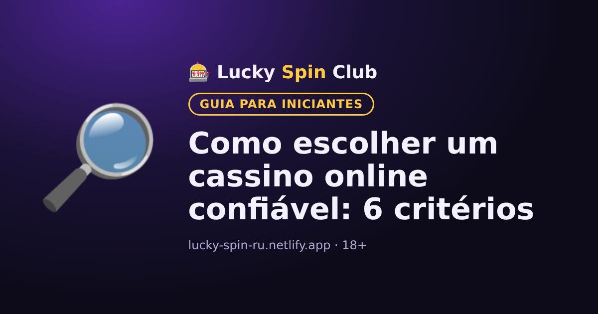

Como escolher um cassino online confiável: 6 critérios

Atualizado: 6 de novembro de 2026
Antes de se cadastrar, vale a pena conferir algumas coisas. Leva cinco minutos e evita surpresas desagradáveis.
1. Licença
As informações da licença costumam ficar no rodapé do site do cassino. Confira o número da licença no site do órgão regulador que a emitiu.
2. Meios de depósito e saque
Veja se há meios de pagamento práticos para você. Confira os valores mínimos e os prazos de saque na seção «Pagamentos» ou «Perguntas frequentes».
3. Condições dos bônus
Compare o rollover, o prazo e a aposta máxima. Um bônus grande com x60 muitas vezes compensa menos que um pequeno com x20.
4. Suporte
Mande uma mensagem no chat de suporte antes do cadastro e faça uma pergunta. Uma resposta rápida e clara é um bom sinal.
5. Ferramentas de jogo responsável
Um cassino confiável oferece limites de depósito, lembretes de tempo e autoexclusão.
6. Idioma e moeda
Veja se o site está em português e se dá para abrir a conta em reais ou em outra moeda que seja prática para você. Na nossa comparação de cassinos você encontra países, moedas e idiomas de cada um.
Quer experimentar? O cadastro leva cerca de um minuto.
🎁 Cadastrar e pegar o bônusPerguntas frequentes
Como confiro a licença de um cassino?
Procure o número da licença no rodapé do site do cassino e confira no site oficial do órgão regulador que a emitiu.
O que olhar nas condições de um bônus?
O rollover, o prazo, a aposta máxima durante o rollover e o limite de saque dos ganhos do bônus.
Cassinos online são legais no meu país?
Depende do país: em alguns são permitidos, em outros só com licença local e em outros são proibidos. Confira a legislação do seu país.